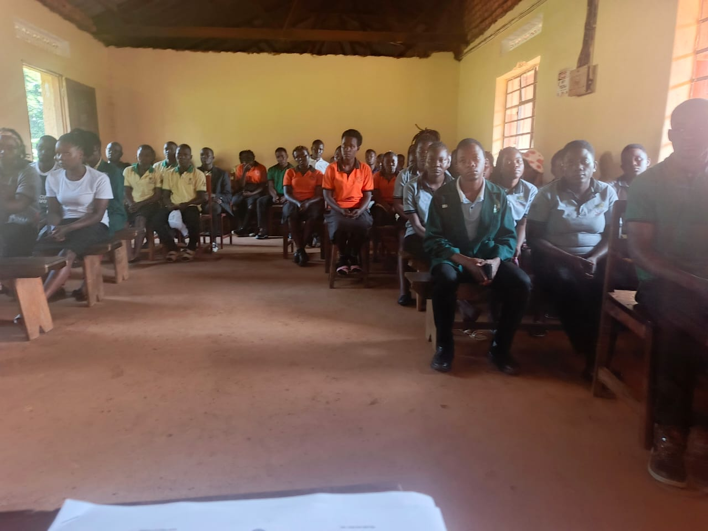
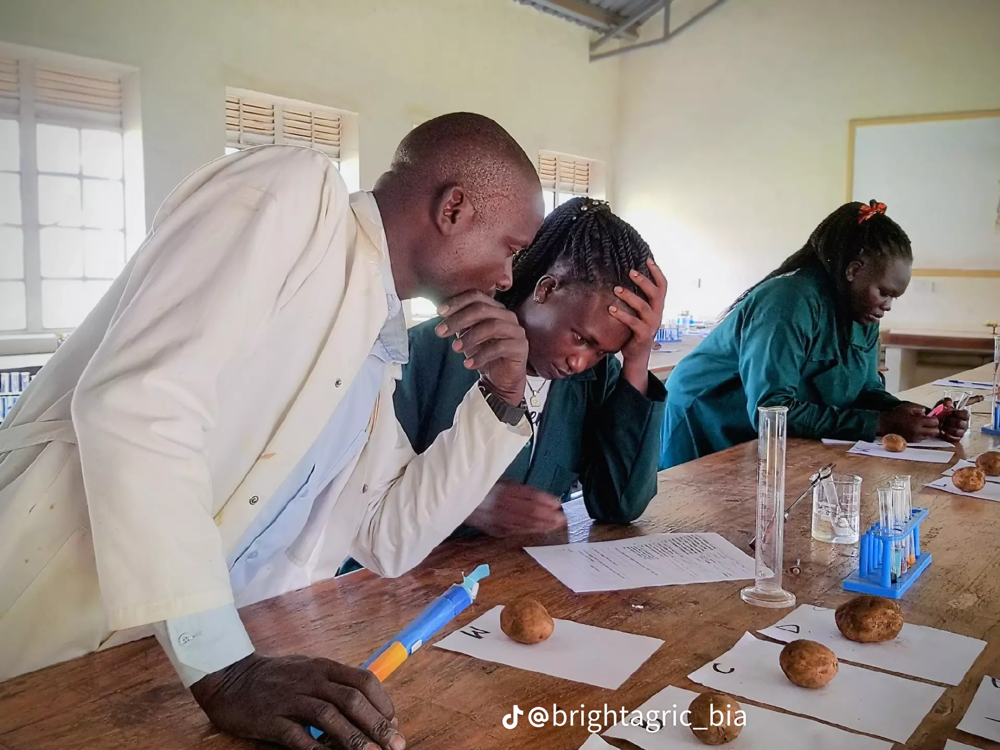
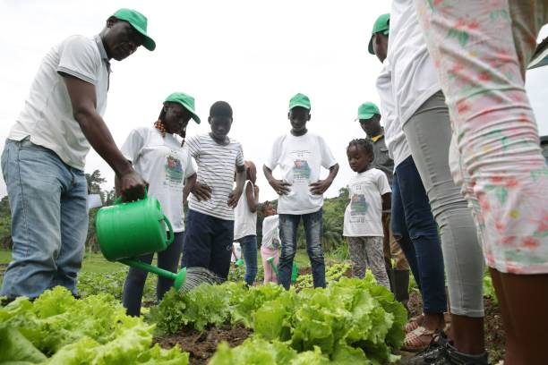
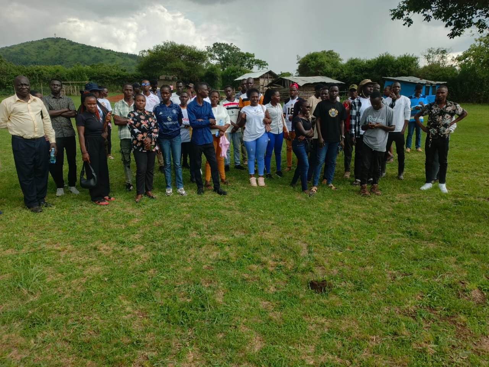
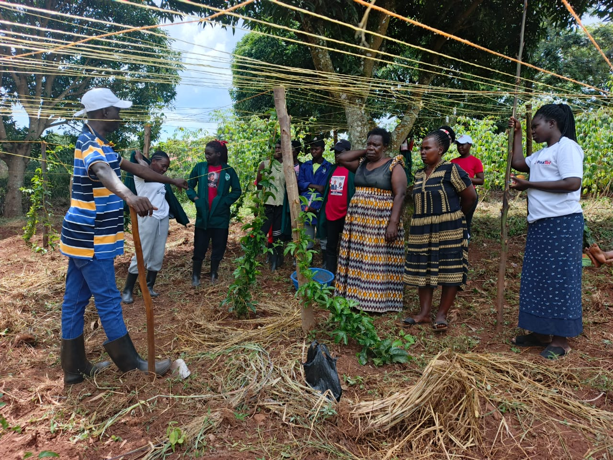

Our gallery showcases hands-on agricultural training, classroom learning,
field practicals, and community engagement. Students gain real-world skills
under the guidance of experienced instructors.

Students during classroom sessions learning agricultural theory and farm management.

Practical field training where students apply classroom knowledge on the farm.

An instructor guiding students through practical vegetable production and crop care.

Students and staff working together in a supportive learning environment.

Community outreach activities promoting sustainable agriculture and food security.
Practical demonstrations and training sessions during field activities.
Student participation and hands-on learning moments at the institute.
Come Join Us 🌱
Become part of a learning community that values practical skills,
innovation, and sustainable agriculture. At Bright Institute of Agriculture,
we nurture talent, build confidence, and prepare you for real opportunities
in farming and agribusiness.